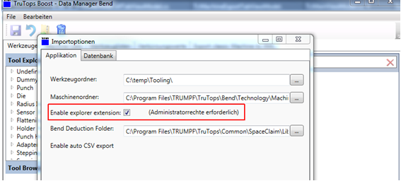
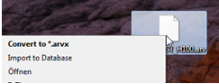

Registry
The registry entries previously created by the installation:
-
HKEY_LOCAL_MACHINE\SOFTWARE\de.trumpf.com\Installation\DeploymentManager\Components
-
HKEY_LOCAL_MACHINE\SOFTWARE\de.trumpf.com\Installation\Deploymen tManager\Products
-
Are now stored by entries in Data.xml under the path C:\ProgramData\TRUMPF\Installation.
-
The installation stores information on installed components and products in this file. However, these keys only apply to the installation/uninstallation of the product, not the function of the product during the runtime.
-
The MMC, pps and TruTops_Shared shared folders are entered under the path HKEY_LOCAL_MACHINE\SYSTEM\CurrentControlSet\services\LanmanServe r\Shares The entries exist in several ControlSet folders.
-
The following keys are set during the installation and are required during the runtime. HKEY_LOCAL_MACHINE\SOFTWARE\Wow6432Node\trumpf\TruTops Fab
The keys:
isMonitor = 0
isPPS = 0
-
This setting identifies the Fab server as the TruTops Boost server. Furthermore, the ODBC entry from Cut is set in the registry: HKEY_LOCAL_MACHINE\SOFTWARE\Wow6432Node\ODBC\ODBC.INI\TP_V010_V010000
-
The entry TPS_V010_V010000 depends, of course, on the installed version of TruTops Boost
-
If the DataManager is started in administrator mode, it writes the following entries:
HKEY_CLASSES_ROOT\.arv\shell\Trumpf Convert
HKEY_CLASSES_ROOT\.arv\shell\Trumpf Import
HKEY_CLASSES_ROOT\.arvx\shell\Trumpf Import
-
However, these keys are written only if the settings for the Explorer extension are activated in theDataManager(see screenshot)

-
Bysettingthese entries,arvxfiles can be selected directly from Explorer and importedby means oftheDataManager.

-
Cryptic folders, in which the uninstallation information is stored, are created under the path HKEY_LOCAL_MACHINE\SOFTWARE\Wow6432Node\Microsoft\Windows\CurrentVersion\Uninstall.

-
Different folders are created for the individual, installed modules under the path HKEY_LOCAL_MACHINE\SOFTWARE\de.trumpf.com\Installation\DeploymentManager\Components\
-
If a module isdeletedmanually, the corresponding entry must bedeletedhere in order, for example, to install an older version.
-
A folder, in which information on the installation time, installation type and version is stored, is created for each installation under the path HKEY_LOCAL_MACHINE\SOFTWARE\de.trumpf.com\Installation\DeploymentManager\Produkts
-
These data are not important for operation.
-
Folders with cryptic names, whichcontaininformation from MS Installer, are created under the pathHKEY_LOCAL_MACHINE\SOFTWARE\Classes\Installer\Produkts
-
For example, the path from which the installation was performed.